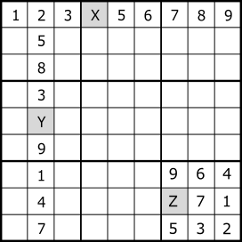

Last Digit

"Last Digit" is a rule of numerical arrangement of Sudoku.
In a house with one indeterminate cell, that cell is determined to the remaining digits.
For this example, set X=4 Y=6 Z=8.
Example

Cells with dark background are puzzle digits, light cells are solved cells, small digits are candidate digits
The r3c3 is determined to be digit 6.
.93...7..5.4.7..1.27.3..5.8..2..78...4..5.6.....4...914.853.9...3...4.85..5..9.3.
If simple program, it will be the following code.